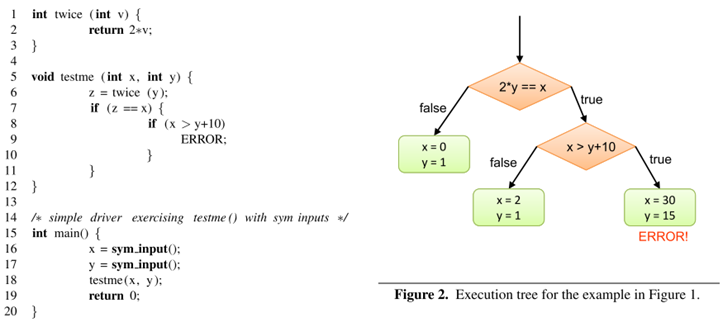
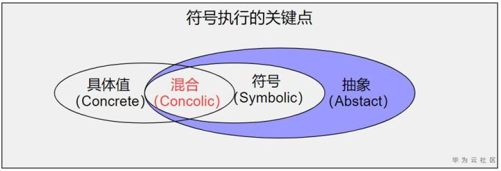
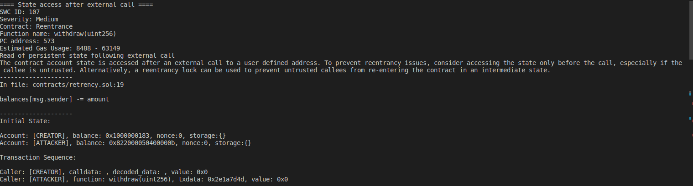
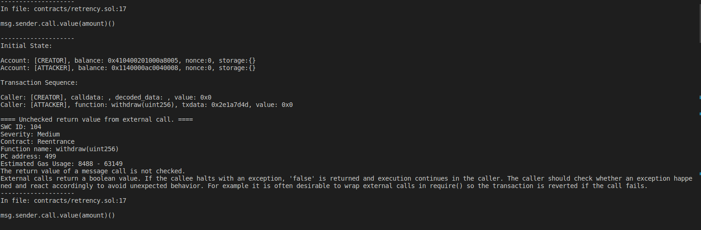
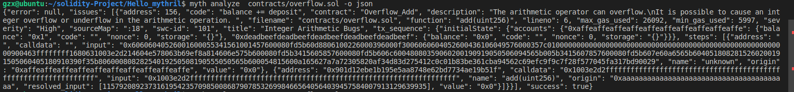

author：Thomas_Xu
符号执行以及Mythril工具
引言
符号执行是一种程序静态分析的技术，被认为非常有前途。近年利用符号执行进行分析的论文在安全的顶会中出现也较为频繁，还是非常值得去学习的。
那么今天先从静态分析说起：
程序静态分析（Program Static Analysis）是指在不运行代码的方式下，通过词法分析、语法分析、控制流、数据流分析等技术对程序代码进行扫描，验证代码是否满足规范性、安全性、可靠性、可维护性等指标的一种代码分析技术。 程序静态分析的历史几乎与程序的历史一样长, 自从有了程序就有了程序分析。特别是随着编译技术的发展，大大带动了程序的自动分析技术。目前静态分析技术向模拟执行的技术发展以能够发现更多传统意义上动态测试才能发现的缺陷，例如符号执行、抽象解释、值依赖分析等等并采用数学约束求解工具进行路径约减或者可达性分析以发现更多的问题、减少误报、提高效率。
经典的符号执行技术
符号执行被看作是最有前途的静态分析技术之一，它可以通过分析技术得到让特定区域执行的输入。最初在1976年由King JC在ACM上提出。即通过使用抽象的符号代替具体值来模拟程序的执行，当遇到分支语句时，它会探索每一个分支, 将分支条件加入到相应的路径约束中，若约束可解，则说明该路径是可达的。符号执行的目的是在给定的时间内，尽可能的探索更多的路径。根据运行的目的来分，主要有两个：
- 从测试的角度来看，它可以模拟出各个路径的输入值，从而创建高覆盖率的测试套件。这里是静态的分析程序得到测试需要的输入，与动态执行程序的测试不同，动态执行程序的测试更多的是依赖完备的测试用例来提升测试的覆盖率，达到发现问题的目的。比如曾经使用过的IBM的Purify 来检测代码的内存泄露问题。就需要人工的看代码，编制大量的测试用例，然后通过让程序执行分别执行这些输入，来提高代码的覆盖率，从而尽可能的发现内存泄漏的问题。
- 从缺陷查找的角度来看，它为开发人员提供了触发的缺陷的具体输入，利用该输入，程序可用于缺陷的确认或调试。符号执行不仅限于查找诸如缓冲区溢出之类的问题，而且可以通过根据缺陷发现的条件，生成复杂的断言，来判断缺陷发生的可能性。
还是用这个经典的例子，来说明符号执行的具体过程。
1 | int twice(int v){ |
这段代码中的函数testme()有三条执行路径。符号执行的目的，就是在给定的时间预算内，生成一组输入，并通过这些输入尽可能多的探索执行路径。
- 执行路径(execution path)：一个true和false的序列seq ={p0, p1, …, pn}。其中，如果是一个条件语句，那么pi=ture则表示条件语句的取值为：true，否则取false；
- 执行树(execution tree)：一个程序的所有执行路径则可表征成一棵执行树。
下图是样例代码的执行树：

符号执行维护了符号状态**σ（symbolic state）和符号路径约束 PC（path constraint (or path condition)**），其中 σ 表示变量到符号表达式的映射，PC 是符号表示的不含量词的一阶表达式。在符号执行的初始化阶段，σ 被初始化为空映射，而 PC 被初始化为 true，并随着符号执行的过程不断变化。在对程序的某一路径分支进行符号执行的终点，把 PC 输入约束求解器（**constraint solver**）以获得求解，生成实际的输入值。如果程序把生成的具体值作为输入执行，它将会和符号执行运行在同一路径，即此时PC的公式所表示的路径，并且以同一种方式结束。
对于样例代码，具体的过程如下
初始化：初始化符号状态σ为空，符号路径约束PC为true；
在每个赋值v = e处，符号执行都通过将 v 映射到σ(e)来更新σ，该映射是通过对当前符号状态求值, 而获得的符号表达式。 例如：
- main（）函数的前两行（第14-15行）的符号执行导致σ= {x ↦x0，y ↦ y0}，其中x0，y0是两个初始不受约束的符号值；
- 在执行第6行之后，σ = {x ↦x0，y ↦y0，z ↦ 2y0}。
对于每个条件语句：if（e） then S1 else S2。
- 在第7行之后，分别创建了两个符号执行实例，分别具有路径约束x0 = 2y0和x ≠ 2y0;
- 在第8行之后，分别创建两个具有路径约束的符号执行实例（x0 = 2y0）∧（x0 > y0 + 10）和（x0 = 2y0）∧（x0 ≤ y0 + 10）。
- “then”分支： PC被更新为PC ∧ σ(e)；
- “else”分支： 生成一个新的PC’, PC’被初始化为：PC∧¬ σ(e)；
- 如果分支的状态σ的PC可满足，则符号执行沿着分支继续，否则路径终止。
例如:
如果一个符号执行实例碰到了exit或error时，当前符号执行实例就会被终止，并利用一个现成的约束求解器来生成一个可满足当前路径约束的赋值。 例如：
- 三条路径按照约束求解后，分别得到我们期望的三组输入：{x=0, y=1}，{x=2, y=1}和{x=30, y=15}。
若代码中包含循环或递归结构，且它们的终止条件是符号化的，则可能导致有无穷多条路径。在实践过程中，需要对路径搜索设置一个限制，例如timeout，限制路径数量，循环迭代次数或探测深度。
经典的符号执行有一个关键的缺点，若符合执行路径的符号路径约束无法使用约束求解器进行有效的求解，则无法生成输入。
现代符号执行技术
经典的符号执行，过度的依赖了符号执行的约束求解能力，这就限制了传统符号执行的能力发挥。很快大家发现在分析过程中，如果能加入具体值进行分析，将大大简化分析过程，降低分析的难度和提升效率；但分析过程中，仍不可避免的还是需要将各种条件表达式，进行符号化抽象后变成约束条件参与执行。将程序语句转换为符号约束的精度，对符号执行所达到的覆盖率以及约束求解的可伸缩性会产生重大影响。所以如何做好混合具体(Concrete)执行和符号(Symbolic)执行的能力的平衡，就成为现代符号执行的关键点。

混合执行测试和执行生成测试这两种现代符号执行的代表都是基于这个思想发展而来的。下面以混合执行测试为例说明下现代符号执行的主要过程。
与经典的符号执行不同，由于混合执行在整个执行过程中，需要维护程序的具体状态，因此其输入需要初始具体值。 混合执行测试从一个给定的输入或随机输入开始执行程序，沿着执行的条件语句在输入上收集符号约束，然后使用约束求解推断先前输入的变化，以便引导程序接下来的执行该走向哪一个执行路径。重复此过程，直到探索了所有执行路径，或者满足用户定义的覆盖标准、时间设置到期为止。
混合执行测试会同时维护两个状态：
具体状态：映射所有有具体值的变量；
符号状态：仅映射没有具体值的变量。
对于样例代码，执行过程如下：
混合执行会生成一些随机的输入值，比如{x=22, y=7}，然后符号化和具体化地一起来执行程序。
依据{x=22, y=7}，程序在第7行，这个具体的执行会走向else分支；符号执行沿着执行路径会生成x ≠ 2y0的路径约束；
混合测试将路径约束中的连接（x ≠ 2y0）取反，生成一个新的约束x0=2y0，并求解得到测试输入{x=2, y=1}。这个新的输入会强制让程序执行then路径。
依据{x=2, y=1}，程序在第8行执行else分支。混合测试会沿着具体执行来进行符号执行，并生成路径约束（x0 = 2y0）∧（x0 > y0 + 10）；
混合测试将路径约束中的连接（（x0 > y0 + 10））取反，会生成一个新约束（x0 = 2y0）∧（x0 ≤ y0 + 10）的测试，求解得到测试输入{x=30, y=15}。在这个输入下程序走到ERROR语句。
混合测试报告所有被探索的执行路径，并终止测试输入的生成。
比较混合执行测试和传统的符号执行，不难发现由于具体值的引入，简化了约束求解的难度。
主要挑战
路径爆炸(Path Explosion)
符号执行在过程处理中默认已经过滤了以下两种路径：
不依赖于符号输入的路径；
对于当前的路径约束，不可解的路径。 但是，尽管符号执行已经做了这些过滤，路径爆炸依旧是符号执行的最大挑战。路径爆炸不是符号执行特有的挑战，是整个程序分析都需要考虑的最大的问题。
解决路径爆炸的方案，可以从以下两个角度来考虑：
减少路径总数（优先的考虑最有希望的路径， 路径合并，剪枝）；
相似的路径不再分析（函数摘要，缓存）；
依据这个思路业界提出了两种解决方案。
- 启发式（Heuristic)： 大多数启发式方法侧重于实现较高的语句和分支覆盖率。
特别有效的方法是使用静态控制流图（CFG）来指导探索，向最接近的路径或优先选择先前执行次数最少的语句；
在每个可行的符号分支，随机选择要探索的一侧； 或者将符号检验与随机检验进行交错进行；
采用先验知识，探索以往容易出错的函数；目前也有研究通过AI的方式得到这些推荐的分析路径；
- 利用完善的程序分析技术 : 这种方法主要是使用程序分析和软件验证中的各种思想，以合理的方式降低路径探索的复杂性。
静态地合并路径，然后再求解；
通过函数摘要，缓存或重用已经计算过的信息用于后续的计算中；
通过剪枝，去除无关的变量对路径的求解的影响；
约束求解
尽管在过去的几年中，约束解决方案技术取得了长足的进步，但约束求解是符号执行的技术瓶颈。
减少不相关的约束(Irrelevant constraint elimination) 符号执行中的绝大多数查询是为了确定某个分支的可行性，一种有效的优化方法是从路径条件中删除与当前分支的结果无关的那些约束。
增量求解(incremental solving) 符号执行期间生成的约束集的一个重要特征是，它们根据来自程序源代码的一组固定的静态分支来表示。因此，许多路径具有相似的约束集，因此可以采用相似的解决方案。
通过重用先前类似查询的结果，来提高约束求解的速度；
通过约束集的超集，减少无解的情况出现；
内存建模
在符号执行中我们将变量映射到了一个内存模型，来表示这个变量的类型、值或者值域。这个对变量的抽象模式对程序语句转化成符号约束的精度和对符号执行的覆盖率有着很大的影响。太过精确，往往容易陷入复杂的计算，而不能得到具体的解；太过笼统，又会造成漏报。所以精度和可扩展性之间是需要权衡的。
目前这个权衡的主要参考依据是：
具体分析问题的性质；
采用的约束求解器的限制；
Mythril工具
Mythril是一个基于符号执行技术的以太坊智能合约安全工具， 其预置的检测模块可以发现合约中存在的一些安全问题。
官方文档https://mythril-classic.readthedocs.io/
安装
目前Mythril虽然没有明确说不支持Windows，但我在windows上安装Mythril遇到了困难，转而在Ubuntu上安装。
Mythril on Ubuntu
1 | # Update |
Mythril on Docker
所有 Mythril 版本，从 v0.18.3 开始，都以 Docker 镜像的形式发布到 DockerHub。mythril/myth
安装 Docker CE 后：
2
$ docker pull mythril/myth
使用与使用命令相同的方式docker run mythril/myth``myth
2
docker run mythril/myth disassemble -c "0x6060"
要将文件从主机传递到 dockerized Mythril，必须将其包含文件夹正确挂载到容器中。对于在当前工作目录中，执行以下操作：contract.sol
Mythril工作原理
Mythril通过在一个特制的以太坊虚拟机里运行智能合约字节码来检查 合约的安全问题，它使用符号执行 技术来检查程序可能的状态，分析过程包含以下步骤：
1、获取合约字节码 2、初始化合约账户的状态 3、利用n个交易来探索合约的状态空间，n默认为2，但可以设置为任意值 4、当发现不希望的状态时，证明或否定其在特定假设下的可到达性
当发现一个漏洞状态时，我们可以计算到达该状态所需的交易。这不仅有助于 确定问题的根源，而且也可以用于漏洞利用。
使用方法
Mythril最基本的安全分析命令是myth analyze，例如：
1 | myth analyze <Solidity file> |
没有其他参数的话，myth analyze命令将执行适合大多数情况的通用分析。
依旧是准备了一个重入漏洞的合约：
1 | pragma solidity ^0.4.19; |
执行以下语句，即可对合约进行分析。
myth analyze contracts/overflow.sol
可以看到，分析出了107也就是重入漏洞

ps：吐槽一下Mythril，目前没有发现这个工具和hardhat，truffle等主流框架兼容。使用起来有点麻烦。
让我意外的是myth给我这个重入合约还检测出来一个漏洞，SWC104，我去一翻文档，好家伙，居然是没有检查call的返回值。不能说是误报吧，但确实没有必要，这也让我怀疑myth底层是不是检测到call调用就会返回去看你检查返回值没有。

更多选项
你还可以选择 -o json来指定json格式输出，我这里换了一个有溢出漏洞的合约测试：

可以看到检测出了101溢出。
还有更多的选项，如下:
- analyze (a)，分析智能合约
- disassemble (d)，拆解合约，返回合约对应的Opcodes
- pro (p)，使用Mythril 专业版（收费）
- list-detectors，列出可用的安全检测模型
- read-storage，通过rpc读取指定地址的存储插槽
- leveldb-search，从本地leveldb中检索
- function-to-hash，计算合约方法的函数标识码
- hash-to-address，将hash转换为以太坊地址
version，版本号
o 输出格式，可选text/markdown/json/jsonv2
- t 交易个数
- solv 是指定solidity编译版本
交易数t
在这里特别说一下-t 也就是交易个数，默认情况下交易数是2。刚刚讲过了符号执行的原理，我们就应该知道，myth是通过探索路径来检测漏洞的，而solidity漏洞许多需要进行复杂的交易，也就是路径会特别深，一般情况下两次交易足够检查出基础的漏洞，特殊的逻辑漏洞还是需要人工进行合约审计的。
由于每个交易可以具有多个有效的最终状态，在理论上，要探索的状态空间与交易数量成指数关系，交易个数越大，执行时间也越长。Mythril在处理多个交易方面通过分析程序路径在读写状态变量的过程关联关系，可以缩小交易个数。

true

...
...
This is copyright.